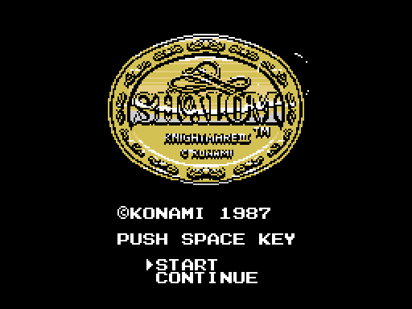
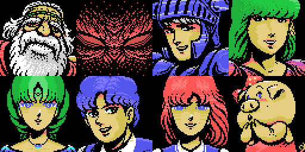
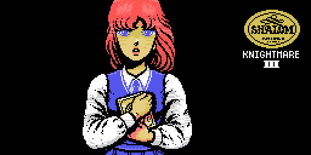
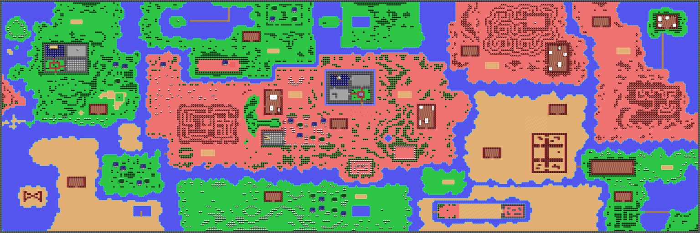
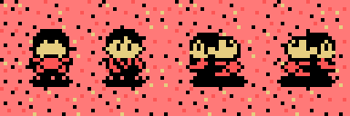
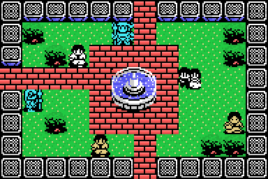
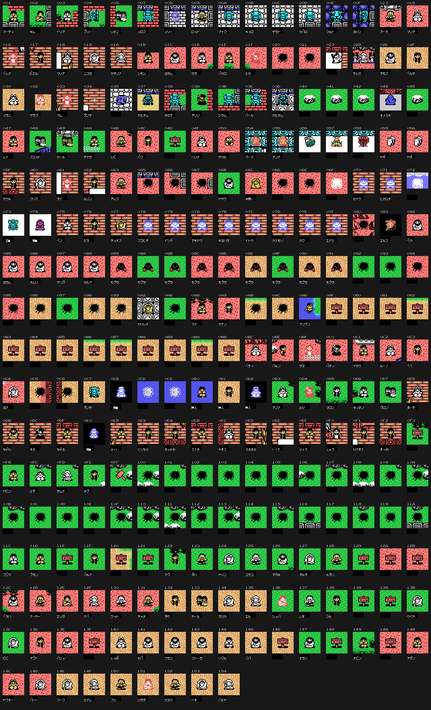
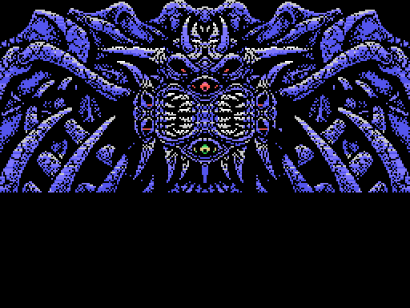
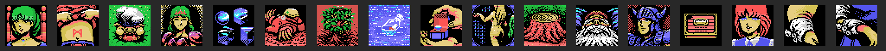
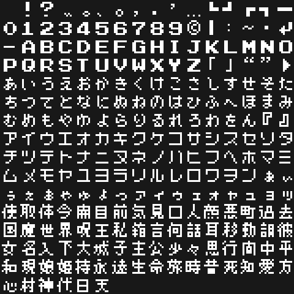

Shalom: Knightmare III (Konami, 1987, RC-754) es una aventura para MSX en japonés: se explora un mundo de salas, se habla con la gente con un menú de órdenes y se combate en escenas de acción. Todo lo que hay en esta página sale de las tablas del cartucho; ninguna imagen es una captura.

El rótulo de Konami (p04:6527, imagen) y la pantalla de título (p04:622B): cinco gráficos en dos tercios, los volteados de p06:B255, la fuente y el rectángulo de nombres de p06:B5CA.
Ocho viñetas que aparecen una por página (p04:6E03). historia_0 carga sus dibujos con cuatro RLE (p04:7CB6, p04:7FFA, p05:81C0, p05:833E) y pone los colores a cero; cada página destapa una viñeta copiando sus colores con una cortinilla (lista p04:7C71, p00:4CD4) y escribe su texto (p04:6EDC). Las viñetas se quedan: al final se ven las ocho.

Los textos son la presentación de los personajes: el protagonista, la heroína, el rey Pampas, la princesa Chelsea, Popolon, Afrodita, Butako y el gran demonio Gog. La historia pone «あなた» («tú») como primer nombre (p04:6E5D). Página a página: 1, 2, 3, 4, 5, 6, 7, 8.
Una conversación con opciones (p04:6693, 53 pasos). El paso 5 (p04:671A) monta la cara de la heroína (los mismos colores que su viñeta de la historia), un dibujo de 12 x 8 fichas y el marco con el emblema; el cuerpo solo toma color si se elige la opción 1 (p04:678E, cortinilla p00:4D28).

Lo que se dice son los mensajes 0x02-0x2A de la tabla de la sala 0x200, con tablas de respuesta por opción (p04:6873, p04:687B, p04:6883).
El exterior es una rejilla de 32 x 16 salas (sala = fila x 32 + columna): la tabla p02:858C suma -0x20, +0x20, -1 o +1 al salir por cada lado. Cada sala son 12 x 8 bloques de 16 x 16 a nibbles (p00:514B), con su juego de fichas (p00:47C6), sus gráficos (p00:482F) y los dibujos que dependen de las banderas de la historia (p09:60CC).

El exterior a tamaño real. Las salas desde la 0x200 se enlazan a mano en el código (p02:859C, p02:8714, p02:88D4; las 0x228-0x22D, al azar con p02:8C83): la primera mazmorra, la segunda y todas las salas desde la 0x200 sueltas.
Tres sprites de 16 x 16 por fotograma (p01:772A); el fotograma es la dirección más el bit 4 de su cuenta de cuadros (p01:7709): cambia de dibujo cada 16 cuadros.

Cada sala tiene su lista (p07:8BC2): tipo, posición y voz. Sus dos colores y su nombre salen de p07:83B4; el nombre son 4 letras de p08:A063. Se pintan con dos sprites con los dibujos de p07:97E8 y los patrones de la sala (p18:6A28). El fotograma lo pone la rutina de cada tipo (p07:882D), leída una a una y cotejada ejecutando su creación (tools/coteja_actores.py): de 302 tipos cotejados, 300 cuadran y los otros 2 aún no han echado a andar.


Una sala con sus personajes andando. Hay 325 tipos; no se ven los de colores 0/0 ni los que no tienen dibujo, y los que van en fichas no están pintados.
Nueve escenas (p02:906E). p10:8C60 las prepara y p00:4893 carga sus gráficos; el rival es el objeto de la clase igual al número de escena y se pinta con fichas en su primer paso. En la 2 y la 4 solo está el escenario: su jefe no pone fichas.

Las nueve: 1, 2, 3, 4, 5, 6, 7, 8, 9.
La vida (0xE3F6) empieza en 0x14 (en la escena 7 del guion, en 8); cada golpe quita 1 y deja 0x40 o 0x20 cuadros sin daño. Con el objeto 11, la capa, solo cuenta un golpe de cada dos (p11:A7B8). La barra son 10 casillas, 13 en la escena 4 (p09:6B51).
El recuadro de la derecha enseña una de 17 viñetas (0xE368): el RLE de p12:733E y la colocación de p09:6713.

La tabla p04:7A15 tiene 94 nombres: del 1 al 24, los objetos que se llevan (0xE9D0, bit 0); el resto, las órdenes de los menús.
Los objetos se guardan como bits de la partida (0xEB53-0xEB55, p03:BE63).
Los 902 mensajes de las tablas de cada sala (p21:639E, p21:64BA) y las 94 opciones, sacados con la tabla de la fuente: 246 caracteres de 8 x 8 (p04:6F39) con kana, cifras, letras y 70 kanji. Los acentos (dakuten) van en la fila de arriba (p00:4F1B).

0xA001) y una clave; 130 letras.00E1-00F0), disco (BDOS) y otro cartucho con «YZ» en 0x4010 (p01:60CB).En La música: 42 piezas sacadas ejecutando el motor del banco 29 y cotejadas con openMSX.